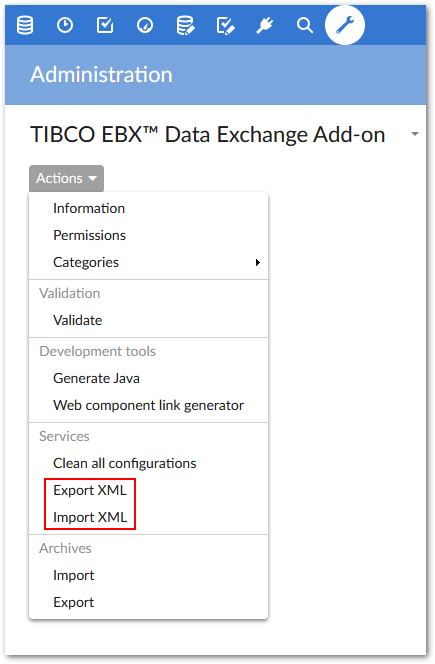
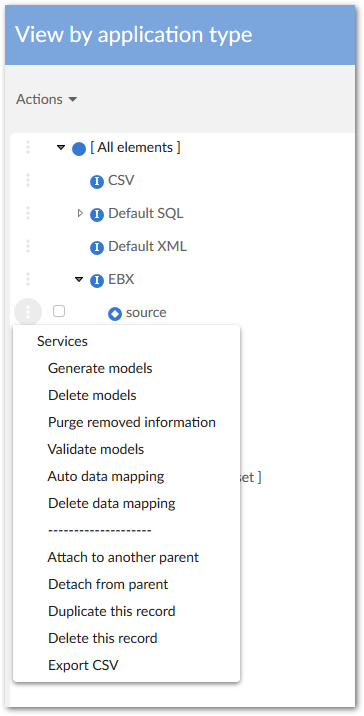
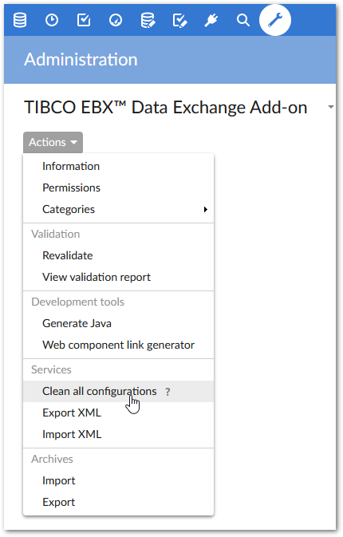
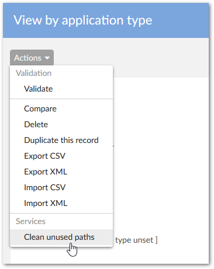

This section describes EBX® Data Exchange Add-on services.
You can import and export all configuration options contained in a EBX® Data Exchange Add-on dataset from and to an XML file. As shown below, these services are accessed from the EBX® Data Exchange Add-on dataset Actions menu. For more detailed instructions on migrating configuration settings, see Migration overview.

The following points highlight features of the services.:
Export XML: All table records (including hidden tables) will be exported to an XML file. You can specify whether the file is indented to improve readability and whether to omit XML comments that describe data location and export date. After you set these options and click Export, the add-on prompts you for a save location.
Import XML: All triggers and constraints are disabled during the import process. You can validate after import. If an error occurs during import, the process stops and an error message is displayed. On the import screen you can select the import mode. Update or insert—If a record in a target table has the same primary key as an imported record, it is updated. Otherwise, new records are inserted. Replace all content—All existing table data is deleted prior to import.
In order to manage user-defined data mapping configurations, a portfolio of services is available depending on the application type. These services are located on the Application by type table in the TIBCO EBX® Data Exchange Add-on dataspace under the EBX® Administration tab.

The creation of user-defined data mapping configurations requires IT skills. Based on these configurations, end-users can export, import and transfer the data easily, all the technical aspects of data mapping configuration are hidden from them.
The table below gives a short description of the services available to manage the user-defined data mapping configurations.
Services applied to an Application of type | Default XML | XML | CSV/Excel | EBX |
|---|---|---|---|---|
Delete data mapping | Physical deletion of all Tables, Fields and related data mapping (Tables: Version, Interface Application, Table mapping, Field mapping, Table mapping preference, Field mapping preference, Field mapping transformation and Path ) for the Application. For an EBX type application, the Object class, Property and related tables (Object Class by Application, Property by Object Class) are also removed. | |||
Generate models | N/A | Tables and Fields are declared as XML Tags. The generation is based on a sample XML file that must be provided as input data. | Tables and Fields are declared as column names. The generation is based on a sample CSV/Excel file that must be provided as input data. | Tables and Fields are declared as an EBX® path. Object classes and Properties can also be generated to get the semantic data model. The generation is based on a dataspace - dataset corresponding to the Application. |
Delete models | N/A | N/A | Logical deletion of Object class and Property type items-if not used by another application. Logical deletion of all application Tables and Fields. The logical deletion is registered by using the property 'Is removed' | |
Purge removed information | N/A | N/A | Physical deletion of the items that are tagged 'Is removed' = 'Yes' by the 'Delete models' service. All data mappings that refer to the deleted items are also physically removed. | |
Validate models | N/A | N/A | Checks if the configuration is still updated with the EBX®' data model. All unaligned Tables and Fields are then modified by changing the 'Is removed' property into the value 'Yes' | |
Auto data mapping | N/A | N/A | Automatically configures the data mapping between two EBX® applications sharing the same Object class and property items. | |
Table 7: Services on 'Application by type' table
This service is located at the TIBCO EBX® Data Exchange Add-on dataset level and allows you to remove all data mapping configurations and get an empty EBX® Data Exchange Add-on repository.

This service is located at the Path table level and allows you to remove all unused paths that have been declared in the data mapping repository.
